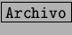
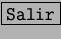
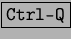
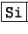
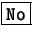
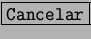

Next: StarCalc: Hoja de Cálculo
Up: Starwriter: Procesador de textos
Previous: Teclas rapidas:
Índice General
Para salir de StarWriter, se pulsa  y se elige , pudiendose
utilizar también las teclas rápidas . Si el documento no se ha guardado
previamente aparecerá un cuadro de dialogo
que preguntando si se quieren guardarlos cambios realizados en el documento, seleccionando  los cambios serán
almacenados y se cerrara la aplicación, si por el contrario elegimos 
los cambios no son guardados y se perderá todas las modificaciones realizadas
en el documento, finalmente si se pulsa  se retornará al documento.
Proyecto Cursos - LuCAS - http://lucas.hispalinux.es/htmls/cursos.html